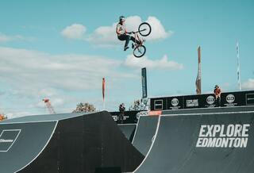
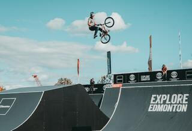

La bicicleta se ha convertido en uno de los medios de transporte de
dos ruedas más importantes y de alta gama a escala mundial. Se
caracteriza por ser personal, por ser ecológica y de propulsión
humana. Básicamente, se trata de un objeto que cuenta con dos ruedas
en línea que sostienen un cuadro hecho a base de aluminio, dos pedales
que ayudan al ciclista a emitir la fuerza de propulsión, un manillar
para controlar la dirección y un sillín para sentarse y estar cómodos
mientras conduces
Si bien es cierto que los nuevos avances tecnológicos han permitido la
creación de vehículos más sofisticados y que funcionan por medio del
uso de motores, las bicis, como popularmente se les ha llamado a las
bicicletas, aún conservan un sitio de honor entre las preferencias del
público. Y claro que cada vez son más las que podemos ver andar en las
calles de cualquier ciudad, sobre todo en Europa
Evolucion de la bicicleta
Ciclistas mas reconocidos del mundo
lance Amstrong
Michigan-USA
Lance Edward Armstrong es un exciclista profesional estadounidense,
campeón del mundo de ciclismo en ruta en 1993
De cara a 1999, Armstrong se encontraba pletórico de moral y su
director le convenció de que era posible incluso llegar a una meta
más alta: vencer el Tour de Francia. Lance se
presentó en la salida como un favorito de segunda fila y al final
arrasó en la clasificación general por delante del suizo Alex Zülle,
si bien este se vio inmensamente perjudicado por una caída en la
segunda etapa donde perdió más de seis minutos
Marco Pantani
Veronna-Italia
Marco Pantani fue un ciclista profesional italiano, ganador del Giro
de Italia 1998 y el Tour de Francia del mismo año.
En la primavera de 1997, ya recuperado de la grave lesión, retornó a
la competición, pero durante el Giro sufrió una caída al cruzarse un
gato en su camino, que provocó su retirada de la carrera. En el Tour
de ese año protagonizó una intensa lucha por el maillot amarillo;
aunque se mostró imbatible en la montaña, Jan Ullrich, muy superior
en las etapas contrarreloj, supo limitar el tiempo perdido en los
Alpes y Pirineos logrando la victoria final y relegando a Pantani al
tercer puesto.
Miguel Indurain
Navarra-España
Fue ganador del Tour de Francia durante cinco años consecutivos (de
1991 a 1995) -el único que lo ha conseguido de forma consecutiva- y
del Giro de Italia en dos ocasiones consecutivas (1992 y 1993)
En la primavera de 1997, ya recuperado de la grave lesión, retornó a
la competición, pero durante el Giro sufrió una caída al cruzarse un
gato en su camino, que provocó su retirada de la carrera. En el Tour
de ese año protagonizó una intensa lucha por el maillot amarillo;
aunque se mostró imbatible en la montaña, Jan Ullrich, muy superior
en las etapas contrarreloj, supo limitar el tiempo perdido en los
Alpes y Pirineos logrando la victoria final y relegando a Pantani al
tercer puesto.


 
